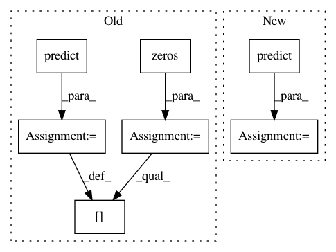

13b86a857c1e9fb716c75c51646eaec5829b945d,trunk/SUAVE/Components/Energy/Networks/Propulsor_Surrogate.py,Propulsor_Surrogate,evaluate_thrust,#Propulsor_Surrogate#Any#,72
Before Change
// Run the surrogate for a range of altitudes
data_len = len(altitude)
sfc = np.zeros([data_len,1])
thr = np.zeros([data_len,1])
for ii,_ in enumerate(altitude):
sfc[ii] = sfc_surrogate.predict([np.array([altitude[ii][0],mach[ii][0],throttle[ii][0]])])
thr[ii] = thr_surrogate.predict([np.array([altitude[ii][0],mach[ii][0],throttle[ii][0]])]) //This is the fix when sklearn is update.
F = thr
After Change
sfc = self.extended_sfc_surrogate(sfc_surrogate, cond, lo_blender, hi_blender)
thr = self.extended_thrust_surrogate(thr_surrogate, cond, lo_blender, hi_blender)
else:
sfc = sfc_surrogate.predict(cond)
thr = thr_surrogate.predict(cond)
sfc = sfc*self.sfc_input_scale*self.sfc_anchor_scale
thr = thr*self.thrust_input_scale*self.thrust_anchor_scale
F = thr
//from SUAVE.Core import Units
mdot = thr*sfc*self.number_of_engines//*Units.lb/Units.lbf/Units.hr
// Save the output
results = Data()
results.thrust_force_vector = self.number_of_engines * F * [np.cos(self.thrust_angle),0,-np.sin(self.thrust_angle)]
results.vehicle_mass_rate = mdot
results.tsfc = sfc
results.thrust_scalar_value = thr
return results
In pattern: SUPERPATTERN
Frequency: 3
Non-data size: 7
Instances
Project Name: suavecode/SUAVE
Commit Name: 13b86a857c1e9fb716c75c51646eaec5829b945d
Time: 2020-01-19
Author: timdmacdo@gmail.com
File Name: trunk/SUAVE/Components/Energy/Networks/Propulsor_Surrogate.py
Class Name: Propulsor_Surrogate
Method Name: evaluate_thrust
Project Name: suavecode/SUAVE
Commit Name: a482f9a6ce01bccb75413cd1ff212ccf047dd614
Time: 2020-01-31
Author: mclarke2@stanford.edu
File Name: trunk/SUAVE/Components/Energy/Networks/Propulsor_Surrogate.py
Class Name: Propulsor_Surrogate
Method Name: evaluate_thrust
Project Name: nipy/dipy
Commit Name: 8b52b3be55e62365b05618a2bff47e43ebcd7e89
Time: 2015-03-12
Author: arokem@gmail.com
File Name: dipy/reconst/sfm.py
Class Name: SparseFascicleModel
Method Name: fit